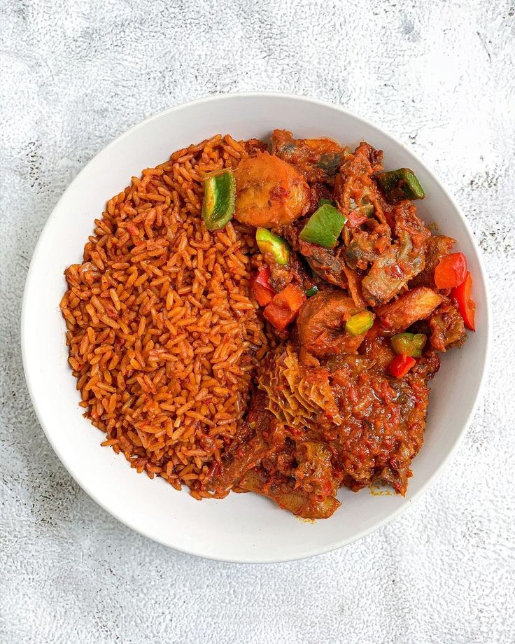

Jollof Rice Recipe

Description
Jollof rice is a popular West African dish made with rice, tomatoes, onions, and a blend of spices
Ingredients
- 2 cups of rice (preferably long-grain or parboiled)
- 3 large tomatoes (blended)
- 3 tablespoons tomato paste
- 1 large onion (chopped, divide into two portions)
- 2 bell peppers (blended with tomatoes)
- 1-2 Scotch bonnet peppers (optional for heat)
- 1 tablespoon garlic (minced)
- 1 tablespoon ginger (minced)
- 1/4 cup vegetable oil
- 1/4 cup vegetable oil
- 2-3 bay leaves
- 1 teaspoon thyme (dried)
- 1 teaspoon curry powder
- 1 teaspoon paprika
- Salt and black pepper (to taste)
- Salt and black pepper (to taste)
Steps
- Prepare the rice
- Blend the tomato mixture
- Sauté onions and seasonings
- Cook the tomato paste
- Cook the blended tomato mixture
- Add spices
- Add stock
- Add the rice
- Add vegetables (optional)
- Finish up
- Serve with any drink of your choice